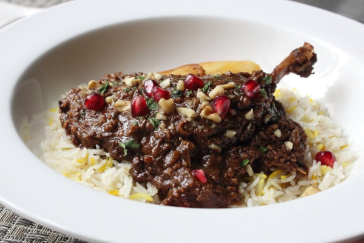

Only Recipes
to matter

Fesenjan
Fesenjan is a traditional Persian stew known for its rich, tangy, and slightly sweet flavor.
The combination of sweet, sour, and savory elements makes it a beloved dish of the cuisine,
especially during special occasions like weddings and holidays.
- 8 Duck legs
- 2 tablespoons of Vegetable Oil
- 3 tablespoons of Olive Oil
- 2 cups diced Yellow Onion
- 1 teaspoon ground Cumeric
- 1/2 teaspoon ground Cinnamon
- 1/8 teaspoon ground Nutmeg
- 6 cups of Chicken Broth
- 2/3 cups of Pomegranate Molasses
- 1/4 cups of Honey
- 3 cups of Walnut halves
- Salt & Pepper to taste
- Season duck legs all over with salt & pepper.
-
Heat vegetable oil in a large skillet over high heat.
Place duck legs, skin-side down, in hot oil and cook until browned, 2 to 5 minutes.
Turn and cook until browned on the other side, 2 to 4 minutes.
Transfer legs to a plate; pour rendered duck fat into a bowl.
-
Pour water into the skillet and bring to a boil while scraping the browned bits of
food off of the bottom of the pan with a wooden spoon. Remove from the heat.
-
Place about 2 tablespoons duck fat into a the oven; add olive oil and heat over medium heat until hot.
Add onion and sauté until golden brown, 7 to 10 minutes.
Add turmeric, cinnamon, and nutmeg; cook and stir until fragrant, 1 minute.
-
Pour chicken broth, pomegranate molasses, honey,
and reserved water mixture from the skillet into the oven; bring to a simmer.
- Meanwhile, grind walnuts to a fine powder in a food processor.
-
Cook and stir ground walnuts in a dry skillet over medium heat until fragrant, 2 to 3 minutes;
stir into broth mixture.
-
Place duck legs into broth and press gently to submerge.
Reduce the heat and simmer until duck legs are no longer pink at the bone and the juices run clear, 3 to 4 hours.
A thermometer inserted near the bone should read 74 °C.
-
Bring broth to a boil; cook until reduced and desired sauce consistency is reached.
Season with salt, ladle sauce over duck legs to serve.
Back